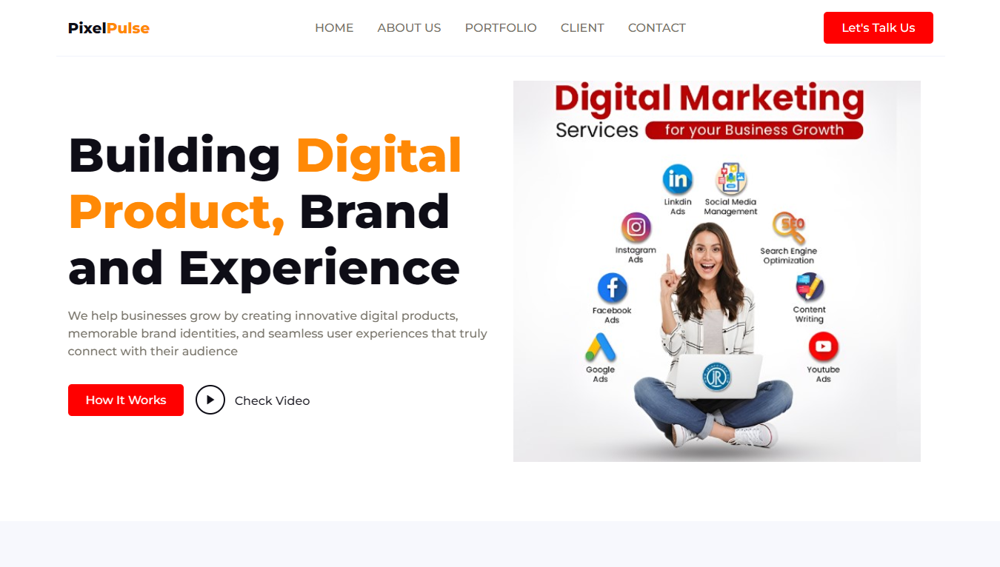

Projects

Collaborated on a web-based music streaming platform, designing a clean and interactive UI with structured pages for browsing, playlists, and user profiles. Implemented a fully responsive layout that adapts seamlessly across all devices while maintaining clean code practices and user-centric design principles. The project showcased skills in interface design, information architecture, and cross-device functionality optimization.

Contributed to designing and developing a modern portfolio website for PixelPlus with clean UI components.did a team project to design and develop a modern portfolio website for PixelPlus, a digital agency.
I contributed to creating clean UI components, structuring the site for easy navigation, The project focused on showcasing the company's work while maintaining a sleek and user-friendly interface.